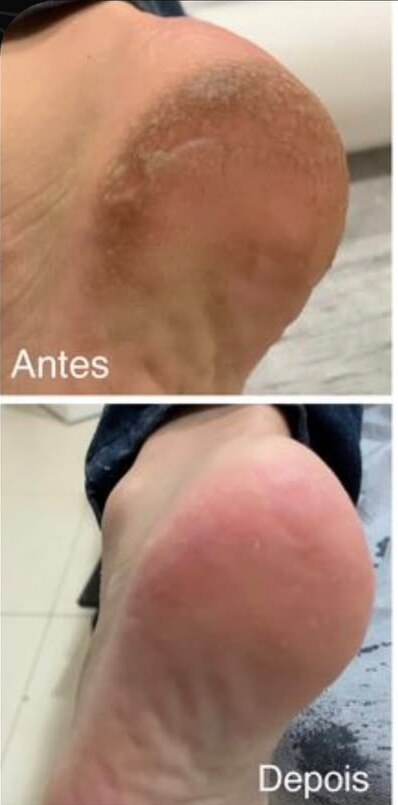
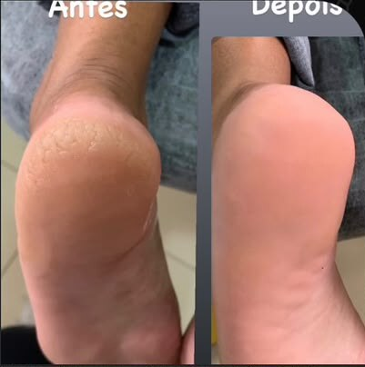
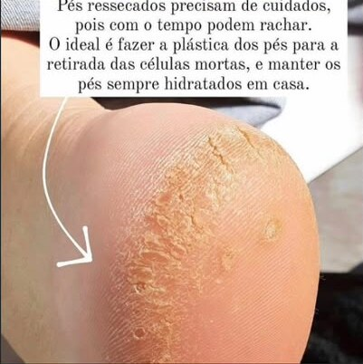

remove células mortas
Ajuda a eliminar o excesso de pele ressecada e a suavizar áreas ásperas e calosidades, especialmente nos calcanhares.
Um cuidado estético para pés mais macios, hidratados e com aparência renovada. Um momento dedicado a você, com atenção especial aos calcanhares.

A plástica podal é um tratamento estético que ajuda a deixar a pele dos pés mais macia, hidratada e com aparência bem cuidada.
Ajuda a eliminar o excesso de pele ressecada e a suavizar áreas ásperas e calosidades, especialmente nos calcanhares.
Ajuda a recuperar a maciez e o aspecto saudável da pele.
Proporciona uma pele mais lisinha, bonita e bem cuidada.
Os pés ressecados merecem atenção. Com a remoção delicada da pele morta e a hidratação, o resultado é uma aparência mais macia e renovada.
As imagens mostram exemplos reais de antes e depois. O resultado pode variar de pessoa para pessoa.
agendar meu cuidado

Áreas ásperas e calcanhares ressecados podem ganhar uma aparência mais suave com a plástica podal.
Depois do atendimento, manter os pés hidratados em casa ajuda a preservar a maciez.
Converse com a Pauli e agende o spa dos pés com plástica podal.
agendar pelo WhatsApp